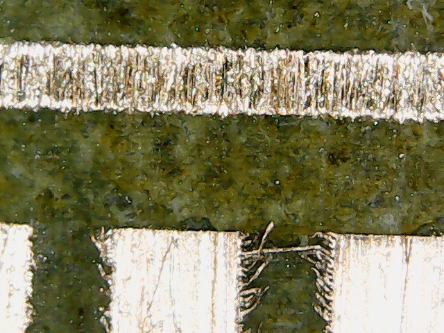
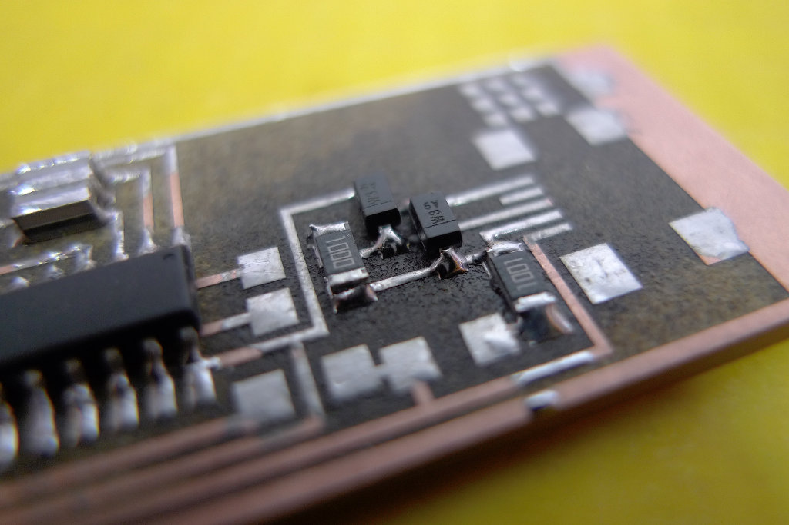

04. Electronics Production
The objective here is to produce a PCB of the FAB ISP. I want to try with different approaches and compare the results.
In particular:
- Fab ISP done with WIN PC-NC, milled with the a 0,5mm tip
- FabISP done directly engraving the metal with a flexx laser from Trotec
Unfortunately we are waiting for the assistence of the milling machine to come and fix it, so I started with the direct engraving method.
Direct Engraving with Trotec Flexx technology
The Flexx technology combines two laser sources:
- CO2 Laser
- Fiber Laser
The fiber laser can engrave metals as well, because of a different lenghtwave, even if the power is only 20 W.
We are trying together with Trotec Italia how to use this laser to make electronic boards.
First expriment on the FabISP
I started with the FabISP with the resonator
The first step was to modify the .png file of the board: the traces and the cutout should be in the same image. I blent them with GIMP and then imported in inkscape to add a cutout vector. To be able to cut the resin (with the CO2 source) the vector should be where the fiber laser has already removed the copper layer.
The red line is the only vector and it's going to be cut at the end of the process.
{kind=link}
First Test: FAIL!
In the fablab, we already understood because of previous experiments, that the copper layer can't be removed by a single engrave: the energy needed was too much and the resin underneed just get burned. We decided to set the number of "light engraves" to five, it takes longer but it's definitely more precise and clean.
The first Fab ISP had not clean borders. It seems that the laser didn't remove entirely the copper, but it cut it in small stripes, here some pictures done with an amatorial microscope at 50x first and 500x after.

In the last picture you can see that onw of this stripes of copper was actually shortcircuiting two pads. After some tests we realised it was a matter of resolution: we used the standard resolution of 500DPI, while it shouldn't be less than 1000DPI.
I tried again and the result was definitely better.

It helps also to brush gently the surface with a slightly abrasive sponge, like the scotch-brite
Some details
The board looked pretty nice, and the pads were very neat.
The laser process probably alterate the surface of the resin, cause while i was soldering i noticed that the flux was changing the color of the material.
Extra Flux, tinning, and minor troubles
I noticed that sometimes it was hard to solder properly the tiny components, so i tried tinning the traces and pads. Instead of using a chamical tinner, I added on the board some estra flux, worm it up with the soldering pen and add a thin layer of tin. It actually spread very well all over the copper and made my job much easier.
in this picture you can see a part with and a part without extra flux.

After this i had no particular problems, but a resistor plased in the wrong place. I had to remove it and doing so i destroyed it. It also left some small pieces embedded in the tin. Fix this took just few minutes.

Final result
Here some pictures of the final board